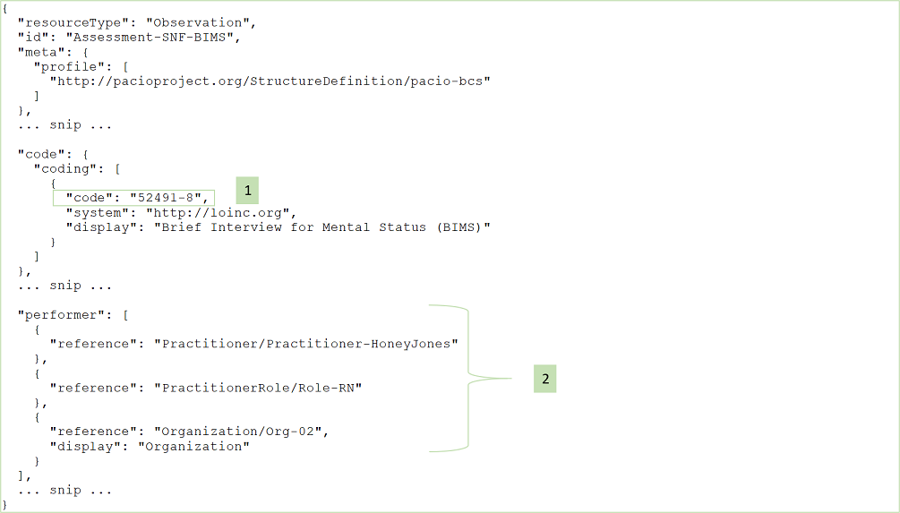
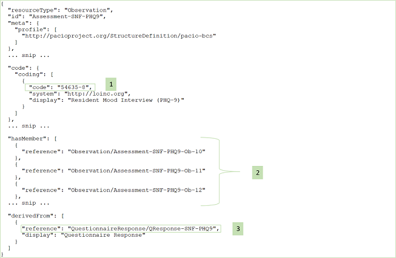
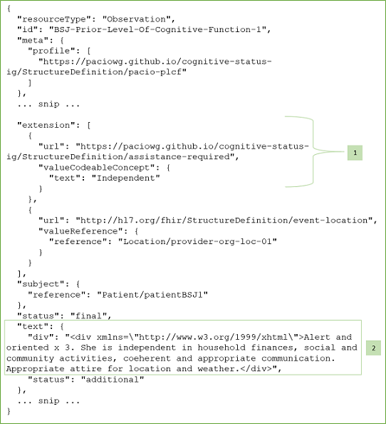

PACIO Cognitive Status Implementation Guide
0.1.0 - CI Build
PACIO Cognitive Status Implementation Guide
0.1.0 - CI Build
PACIO Cognitive Status Implementation Guide - Local Development build (v0.1.0). See the Directory of published versions
This implementation guide provides a set of resource profiles to define how information should be packaged and retrieved in the exchange of PAC assessment data. In the following sections the highlights of the key fields of each profile are presented and guidance for building profile instances is provided.
A note on the use of “Must Support” in the Implementation Guide: For profiles defined in other IGs, the meaning of “Must Support” is established in the defining IG. For profiles defined in this IG, Must Support will conform with US Core definition.
This resource profile is intended to be used for data exchange of a completed, or sections of a completed, post-acute care (PAC) assessment. The CognitionQuestionnaireResponse resource also preserves the structure of the PAC assessment questionnaire to provide context for the PACIO observation-based information and is derived from the FHIR resource QuestionnaireResponse.
| Key Fields to Highlight | Description & Constraints |
|---|---|
| questionnaire | A URL pointing to the file of the Questionnaire that defines and organizes the questions for which answers are being provided. |
| subject | A required field constrained to Reference(Patient)—since the focus is on data exchange with patient assessment data. |
| item.id | This field is chosen to contain the code of a section title or an observation question. For example, the LOINC code ‘83218-8.’ |
| item.linkId | This field should contain the ‘linkId’ of the corresponding section title or question from the Questionnaire. |
| answer.value | This field is constrained to Reference(Observation). |
| Item[*].item | The nested questionnaire response items should show the same nesting structure as presented in the Questionnaire. |
This resource profile is intended to be used for data exchange of a point in time bundle of cognitive status observations from a single post-acute care (PAC) assessment. It is derived from the FHIR resource Observation.
| Key Fields to Highlight | Description & Constraints |
|---|---|
| event-location | A “must support” extension added to the Observation resource for storing the Reference(Location) to indicate where the observation event occurred. |
| device-patient-used | A “must support” extension added to the Observation resource for storing the Reference(UseOfDevice) to specify one or more devices used by a patient during a cognitive status assessment. |
| category | A required field with 'extensible' binding to the code system https://terminology.hl7.org/1.0.0/ValueSet-observation-category.html. This field should contain the value ‘survey’ for PAC assessment. |
| code | A required field with ‘extensible’ binding to the LOINC code system http://loinc.org/. |
| subject | A required field constrained to Reference(Patient)—since the focus is on data exchange with patient assessment data. |
| effective | This field, limited to the type dateTime or Period only, indicates the time/time period for the assessment. |
| performer | At least one ‘performer’ is required to be present to indicate who is responsible for the observation. |
| value | This field can only be of the type CodeableConcept. In the case of an assessment with a summary score, for example, this field may appropriately be used to contain the score value. |
| hasMember | This field points to the individual observation instances included in the assessment. |
| derivedFrom | This field points to a CognitionQuestionnaireResponse instance. |
This resource profile is intended to be used for data exchange of a single cognitive status observation included in a post-acute care (PAC) assessment. It is derived from the FHIR resource Observation.
| Key Fields to Highlight | Description & Constraints |
|---|---|
| event-location | A “must support” extension added to the Observation resource for storing the Reference(Location) to indicate where the observation event occurred. |
| code | A required field with ‘extensible’ binding to the LOINC code system http://loinc.org/. |
| subject | A required field constrained to Reference(Patient)—since the focus is on data exchange with patient assessment data. |
| effective | This field, limited to the type dateTime only, indicates the time for the observation. |
| performer | At least one ‘performer’ is required to be present to indicate who is responsible for the observation. |
| value | This field can only be of the type CodeableConcept. |
| component.code | This is a required field, if it is used, to hold the LOINC code or text value of a column header (for the purpose of grouping answers under a heading and displaying side-by-side columns). |
| component.value | This field, if it is used, contains the answer to the (associated) observation question. |
| derivedFrom | This field points to a CognitionQuestionnaireResponse instance. |
This resource profile is intended to be used for the exchange of prior level of cognitive function data when formal prior level of cognitive assessments are not available. It is derived from the FHIR resource Observation.
| Key Fields to Highlight | Description & Constraints |
|---|---|
| event-location | A “must support” extension added to the Observation resource for storing the Reference(Location) to indicate where the observation event occurred. |
| assistance-required | A “must support” extension added to the Observation resource to provide indication of 'independent' vs. 'assistance needed'. |
| text | A “must support” field and to be used as text summary of the prior level of cognitive function for the patient. |
| code | This required field has the fixed value of the LOINC code 11332-4 "History of Cognitive Function Narrative". |
| subject | A required field constrained to Reference(Patient)—since the focus is on data exchange with patient assessment data. |
| effective | This required field, limited to the type dateTime or Period only, indicates the time/time-period for the observation. |
| performer | At least one ‘performer’ is required to be present to indicate who is responsible for the observation. |
| value | Optional field with the type CodeableConcept. |
This resource profile is intended to be used for specifying a device used by a patient during a cognitive status assessment. It is derived from the FHIR resource DeviceUseStatement.
| Key Fields to Highlight | Description & Constraints |
|---|---|
| subject | A required field constrained to Reference(Patient)—since the focus is on data exchange with patient assessment data. |
| device | This field is required and points to a specific device used by patient during assessment. |
The PACIO data model as expressed in the resource profiles is designed to be flexible so as to facilitate the exchange of a variety of types of PAC assessment data. The key to effective data exchange and searching of assessment data is the use of content standards. Therefore, it is paramount that nationally accepted, standardized coding systems such as LOINC and SNOMED are used in specifying assessment data elements.
In the following set of examples, we provide guidance for using specific codes and conventions for constructing profile instances for data exchange. Although we reference a number of particular PAC patient/resident assessment instruments and provide examples to show how those particular types of assessment data can be exchanged, we do not endorse any of those assessment instruments over other assessment instruments that we have not mentioned. Our intention is to demonstrate the flexibility and adequacy of the PACIO data model, rather than to suggest the best types of cognitive assessment data for clinicians to use.

Guidance and Notes:

Guidance and Notes:

Guidance and Notes:

Guidance and Notes:

Guidance and Notes:

Guidance and Notes:
IG © 2020+ . Package hl7.fhir.us.pacio-cs#0.1.0 based on FHIR 4.0.1. Generated 2020-10-15
Links: Table of Contents |
QA Report
| Version History |
Search |
 |
Propose a change
|
Propose a change